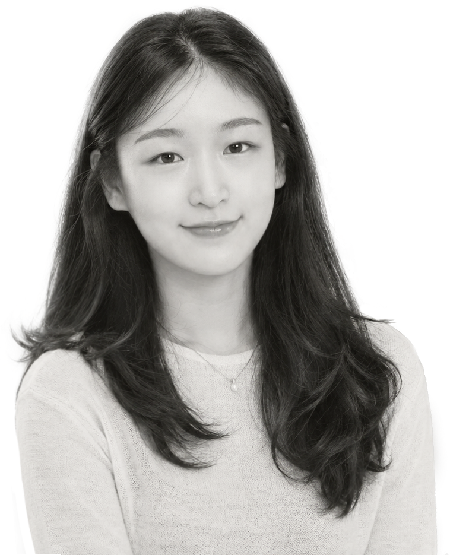

디자인은 보기 좋은 결과물을 만드는 일이 아니라, 문제를 발견하고 실질적인 결과로 연결하는 과정이라고 생각합니다. 그래서 기획과 아이데이션부터 디자인 실행, 피드백과 개선에 이르기까지 프로젝트 전반을 함께 고민합니다. 광고대행사와 IT 업계를 거치며 프로젝트에 필요한 역할을 직접 채워 왔습니다. 기획부터 실행까지 믿고 맡길 수 있는 디자이너가 필요하시다면, 함께하고 싶습니다.
I believe design isn’t just about making things look good. It’s about uncovering problems and turning solutions into real results. That’s why I stay involved across the entire project, from planning and ideation to design execution, feedback, and iteration. Working across advertising agencies and the tech industry, I’ve stepped into whatever role each project needed. If you’re looking for a designer you can trust from concept to delivery, I’d love to work with you.